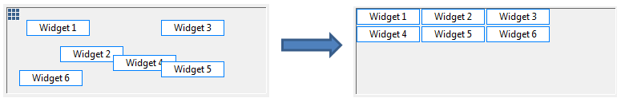

A virtual widget (widget with no figure at runtime) that helps to automatically layout widgets in a container in grids. The width of a grid is determined by the widget with largest width in the same column. The height of a grid is determined by the widget with largest height in the same row. Layout widget is always on top of other widgets and its position is always on left top corner. Its size is not changeable. A container can have only one layout widget.
If you have a script generated OPI, you make take advantage of this widget to layout the widgets automatically so that you don't need to specify the position and size of every widget in your script.
In edit mode, right click the widget and select Layout Widgets will
layout widgets in the same container in grids. At runtime, it will automatically layout
widgets during OPI startup.
Most of widget common properties are not available to this widget.